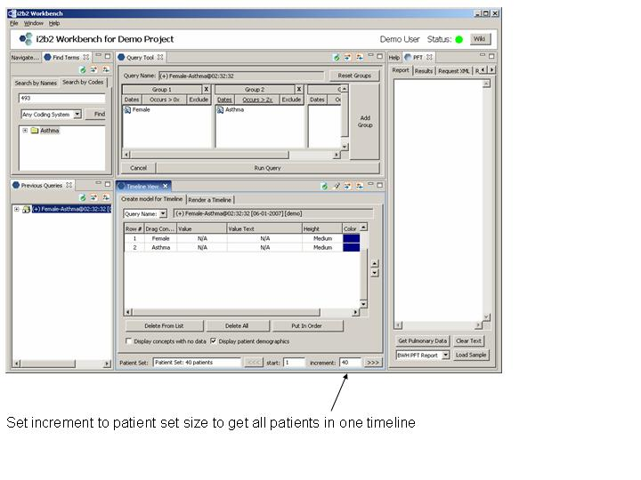

Displaying a Previous Query
Suppose we want to revisit a previous query and display all the patients in the query
-
Click on the previous query, and drag it to the Create model for Timeline tab in the Timeline.
-
Default setting is Display patient demographics.
This provides a title containing gender, age and race for each patient.
-
In order to view all patients in one timeline, set the increment field equal
to the total number of patients (40).
